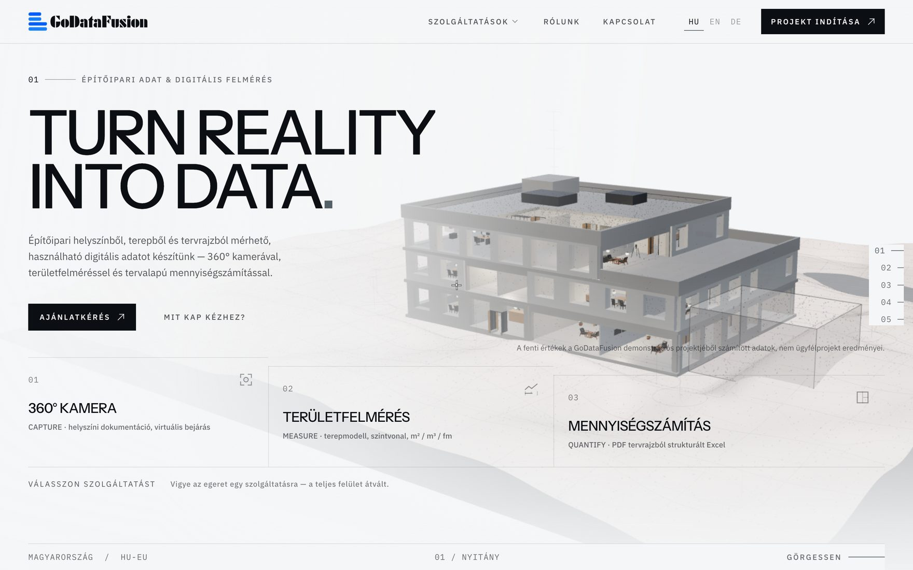
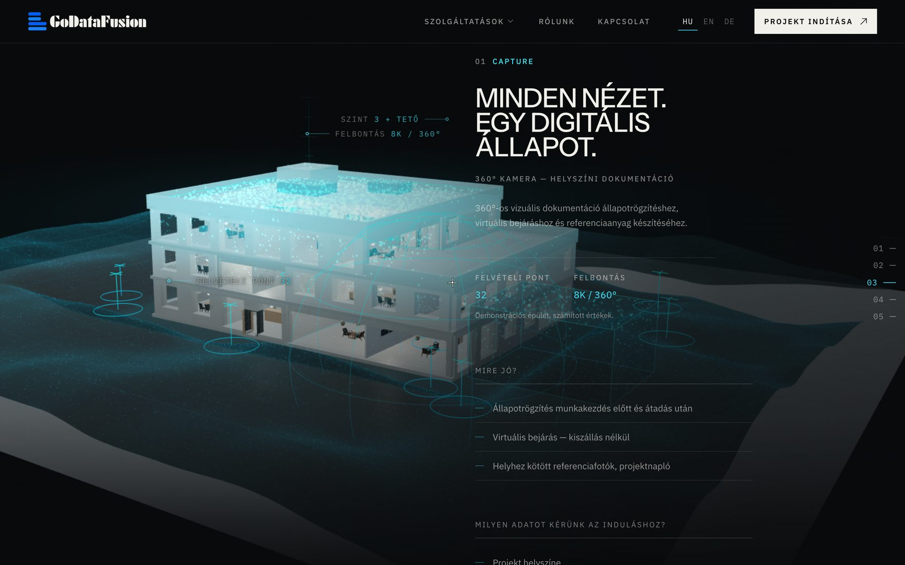
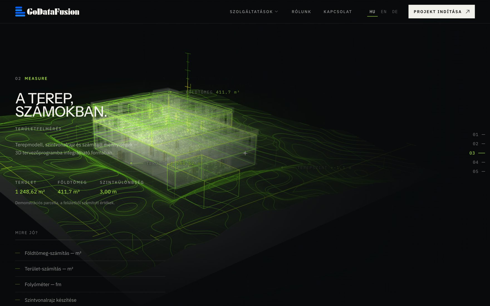
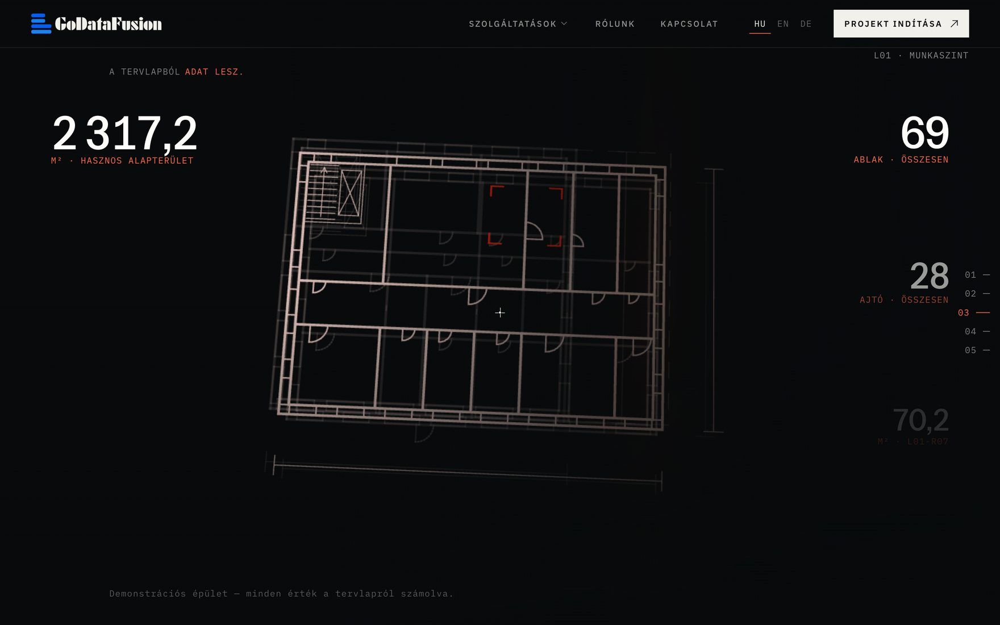

Stratos / Projekte / GoDataFusion
GoDataFusion — Bauvermessung
Aus Wirklichkeit werden Daten. An einem Gebäude gezeigt.
GoDataFusion macht drei Dinge: Es dokumentiert einen Standort mit der 360°-Kamera, vermisst das Gelände und ermittelt Mengen aus Plänen. Die Website zählt das nicht auf, sondern führt durch alle drei an einem einzigen 3D-Gebäude.

Kundenkontext
Drei Leistungen, die der Kunde noch nie gesehen hatte.
360°-Standortdokumentation, Geländeaufmaß und Mengenermittlung aus Plänen erklären sich einem Bauunternehmen oder Bauherrn nicht von selbst. Solange man nicht sieht, was am Ende herauskommt, wirkt es wie ein weiterer Kostenpunkt.
Die Aufgabe war deshalb nicht, die drei Leistungen zu beschreiben, sondern zu zeigen, wie aus ein und demselben Standort ein Bild, ein Geländemodell und eine Tabelle wird.
3D-Weberlebnis
Ein Gebäude, drei Lesarten
Im Zentrum der Seite steht das 3D-Modell eines dreigeschossigen Gebäudes. Beim Scrollen verwandelt sich dasselbe Modell: Während der Besucher nach unten scrollt, zeigt jede Leistung eine andere Schicht davon.


- Capture — Punktwolke und Aufnahmepunkte
- Im Kapitel 360°-Kamera entsteht das Gebäude als Punktwolke, umgeben von den Aufnahmepunkten. Der Besucher sieht, was die Leistung am Ende übergibt: einen begehbaren digitalen Zustand.
- Measure — Gelände, mit Höhenlinien
- Beim Geländeaufmaß wird das Modell zum Drahtgitter, darunter erscheint der Höhenlinienplan des Geländes mit berechneter Fläche und Erdmasse.
- Quantify — Grundriss, mit Stückzahlen
- Bei der Mengenermittlung flacht das Gebäude zum Grundriss eines einzelnen Geschosses ab, und ringsum erscheinen die aus dem Plan ermittelten Werte: Fläche, Türen, Fenster, Räume.
- Eine Oberfläche, die sich jeder Leistung anpasst
- Auf dem Startbildschirm wechselt die ganze Oberfläche, sobald man mit der Maus über eine Leistung fährt. Jedes Kapitel hat eine eigene Farbe, die auch das Modell und die Zahlen begleitet.
- Ehrliche Beispieldaten
- Neben jeder Zahl steht, dass sie aus einem Demonstrationsgebäude und einer Musterparzelle berechnet wurde. Bei einem Datenunternehmen ist Glaubwürdigkeit das Produkt, deshalb haben wir das nicht versteckt.

Suchmaschinenoptimierung
Drei Sprachen, eine Seite pro Leistung
Hinter der eindrucksvollen Startseite steht auch eine vollständige Suchmaschinenoptimierung. Alles Folgende lässt sich auf der Live-Website prüfen.
- Ungarisch, Englisch und Deutsch
- Alle acht Seiten in allen drei Sprachen, mit eigenem Titel und eigener Beschreibung pro Sprache, geschrieben für den dort verwendeten Suchbegriff: Mengenermittlung heißt auf Englisch quantity takeoff, auf Ungarisch mennyiségszámítás.
- Eine eigene Seite pro Leistung
- 360°-Kamera, Geländeaufmaß und Mengenermittlung haben jeweils eine eigene Unterseite mit eigenem Titel und eigener Beschreibung bekommen — so kann jede auf ihre eigene Suche antworten.
- Sprachen verknüpft
- hreflang-Auszeichnung auf jeder Sprachversion, mit Standardversion, und eine kanonische URL auf jeder Seite — Google weiß, welche Sprache es wem zeigen soll.
- Strukturierte Daten
- Die Leistungsseiten beschreiben sich Suchmaschinen gegenüber als Dienstleistung, mit Breadcrumb-Navigation.
- Sitemap und robots.txt
- Alle 24 Seiten stehen in der Sitemap, und die robots.txt verweist Suchmaschinen darauf.
Was hier noch fehlt
Ergebniszahlen fehlen bewusst
Die Website ist neu, die Rankings entstehen gerade. Zahlen zu Besuchern oder Anfragen ergänzen wir, sobald sie messbar sind und der Kunde sie freigegeben hat — geschätzte Zahlen nie.
Wie geht es weiter
Wenn du eine ähnliche Aufgabe hast, sind das die nächsten Schritte.